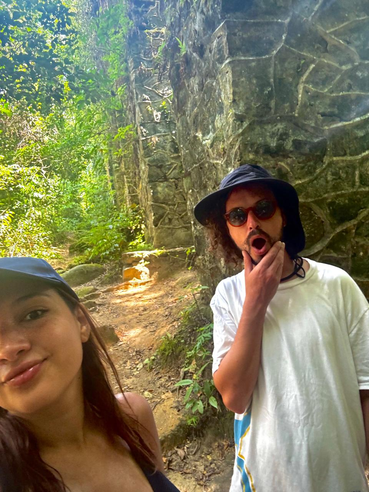

Relatos de Viaje y rutas compartidas
Somos Azul y Diogo, dos personas con un sueño, viajar por el mundo. Juntos viajamos a las playas de Brasil, a la cordillera mendocina y al sur helado de Argentina, nuestro pais. Hoy en dia soñamos con recorrer Europa en un futuro cercano y proximamente estaremos conociendo Colombia. Este Blog surge como la idea de poder tener un diario de viajes, pero tambien es un rincon para compartir lo aprendido en el camino, las risas, los errores, los lugares que nos robaron el aliento y los luagres que nos descepcionaron (desde nuestra experiencia, que puede ser distinta a la tuya obviamente) Gracias por leernos!